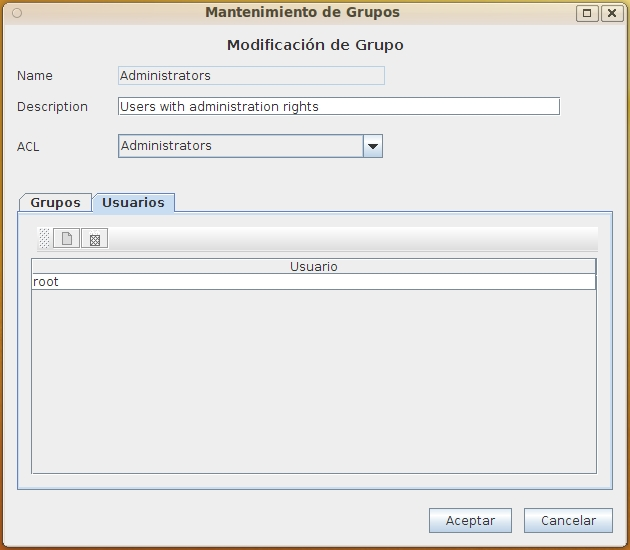

Al seleccionar en el formulario de Lista Grupos las opciones de Alta, Baja, Modificación o Copia de ACL aparecerá este formulario con diversos campos activados o desactivados.
Este formulario contiene la información:
Durante el alta solo se puede introducir nombre y descripción. Para agregar los usuarios o grupos debe modificarse posteriormente.
Durante la modificación no podrá alterarse el nombre del grupo, ya que es el elemento que identifica unívocamente el mismo.
Durante la baja todos los elementos estarán desactivados. Solo se presentan para que pueda verificarse la información antes de su borrado.

Debe tenerse en cuenta que un grupo contiene a otros grupos y así indefinidamente, de forma que puede estructurarse la representación de la organización. Tambien puede incluirse un grupo en diversos grupos, de forma que por ejemplo puede crearse un grupo "Personal de Barcelona" e incluirlo en los grupos "Barcelona" y "Personal". Similarmente puede crearse un grupo "Dirección Barcelona" que se incluya en "Dirección" y en "Barcelona". Esto permire asignar los permisos y el acceso a los elementos necesarios de forma sencilla y flexible.
Ver: Lista Grupos y Lista de Usuarios